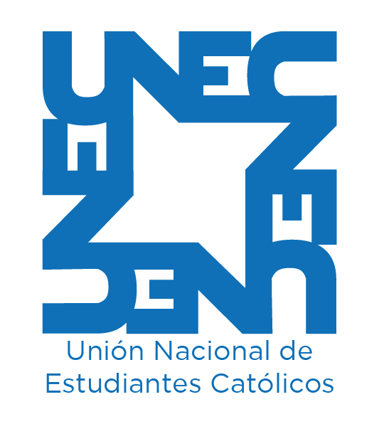

Experiencia
-

Diseñador gráfico de marketing
Red InterQuorum
Mayo de 2018 - actualidad
Cajamarca, Perú
-

Voluntario
Unión nacional de estudiantes catolicos
Agosto de 2017 - Enero de 2019
Cajamarca, Perú